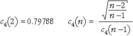

If you don't want to print now,
Statistics for complex problems
In practice, problems are rarely well-defined and there may be various different ways to collect data to throw light on them.
Collection and analysis of data to help attack the problem usually suggest further questions for which further data are required. Several cycles of data collection and analysis are usually needed, with considerable input from an expert in the problem area between each cycle of the process.
Continuous quality improvement
In business and industry, statistics is an important part of the long-term monitoring of performance. We may simply want to ensure that systems continue to perform at their current levels, or the aim may be to improve aspects of the system. The latter is often called continuous quality improvement or total quality management.
Problems in a process are usually detected by collecting and analysing data about the performance of the system. This section describes the use of control charts as a way to monitor processes.
Inherent variability
A certain level of variability in any process is unavoidable. We say that this 'acceptable' level of variability is a result of common causes (or random causes) and if it is the only source of variability, the process is said to be in control.
Systematic changes
Our aim is to detect changes to the output that are not the result of common causes. Such systematic changes are said to be the result of special causes (or assignable causes) and could result in...
Systematic changes usually indicate problems with the quality of the output and the process is said to be out of control.
Run chart
A control chart plots measurements describing the process in time order — a type of time series plot. We hope to use it to quickly detect problems and adjust the process to maintain quality. If a single value is recorded at each time, the control chart is called a run chart. (Other control charts plot sample means and ranges.)
The challenge is to detect systematic changes in the control chart (due to special causes) over the background level of variability (due to common causes).
In the example below, the manager has determined that an output measurement should 'almost always' be between 2,000 and 2,080 with variability in this range considered to be due to common causes. Two out of the last four values were above the upper limit, suggesting a problem with the process that should be investigated and fixed.
Control limits
The simplest rule suggesting a special cause is any value that is outside two control limits. Values outside the control limits suggest that the process is out of control — they trigger an examination of the process for a special cause.
Control limits are usually based on the mean and standard deviation of the process when it is in control. The 70-95-100 rule of thumb states that in many distributions,
By setting the upper and lower control limits to be 3 standard deviations on either side of the process mean, we avoid many 'false alarms' when the process is in control. This is important since values outside the control limits would trigger an examination of the production process — possibly a costly exercise.
Shape of the distribution
The 70-95-100 rule of thumb is most accurate for reasonably symmetric, bell-shaped distributions, though values more than 3 standard deviations from the mean are rare for all distributions. However these control limits should be avoided for very skew distributions — consider transforming the data before producing a run chart.
Additional triggers for an out-of-control process
The most commonly used indication of a process being out-of-control is a value outside the upper and lower control limits (more than three standard deviations away from the centre line). This is sensitive to changes to the process mean or increases in the process variability.
Additional triggers have been proposed that are also sensitive to systematic changes in a process. These are all based on successive values within 1, 2 or 3 standard deviations from the centre (Zones C, B or A).

False alarms
Although the individual patterns that we use as triggers occur rarely in a process that is in control, they do occur occasionally. Indeed, the proportion of values from a stable process that triggers each of the criteria is typically about 1 in 200, so if all five criteria are used, a reasonable number of false alarms will occur.
Clearly a single exceptional value is not conclusive proof that the process is out of control. However it is appropriate to examine carefully the operation of the process to look for an assignable cause for this value (and adjust the process if such a cause is discovered). And a series of such values does indicate that the process is out of control.
Obtaining control limits
It is important to evaluate control limits from the mean and standard deviation of values from the process when it is in control. The process should be monitored carefully (to avoid special causes) for this training period.

Samples instead of individual values
Although control charts for individual values are sometimes used, it is more common to examine samples from a process at regular intervals rather than individual values.
Control chart for means
This avoids the problem that the 70-95-100 rule of thumb is poor for skew distributions — sample means have distributions that are closer to normal than individual values. If the sample size is n,
 =
= 
The control limits for a control chart of sample means are therefore...
 ± 3
± 3
where  and s are estimates of the mean and standard deviation of individual values when the
process is in control. These control limits should be distinguished carefully
from the corresponding control limits for individual values,
and s are estimates of the mean and standard deviation of individual values when the
process is in control. These control limits should be distinguished carefully
from the corresponding control limits for individual values,
 ± 3s
± 3s
Since the control limits used in a control chart for means are closer to  than those in a control chart for individual values, the chart is more sensitive
to changes in the process mean over time.
than those in a control chart for individual values, the chart is more sensitive
to changes in the process mean over time.
Training data
In the example below, the control limits use the mean,  , and standard deviation, s, from a training period of five samples to set control limits for individual values.
, and standard deviation, s, from a training period of five samples to set control limits for individual values.

The control limits for the sample means are much narrower and are therefore more sensitive to changes in the process mean.

As in control charts for individual values, additional triggers can be used that depend on several successive means — e.g. six successive sample means either increasing or decreasing suggest that there might be a special cause. (The above process seems in control.)
Better estimate of s from training samples (advanced)
A different estimate of the process standard deviation, s, is usually preferred to the overall standard deviation of the values in the training samples. If the standard deviations of the k training samples, each of size n, are s1, s2, ..., sk, a commonly used estimate of s is...
where

Detecting changes to process variability
A control chart of sample means is used to detect shifts in the 'centre' of a process. In a similar way, a control chart to assess whether the process variability has changed can be based on the spread of successive samples.
The most commonly used control chart for process variability is based on the sample ranges.

By separately targetting the process centre and variability with control charts for means and ranges, we can get better indications of any changes in the performance of the process, and we can therefore intervene more promptly to correct potential drops in quality.
Finding the cause of problems
Control charts (and other collected data) may indicate problems with a system. However, after detection of a problem, its cause must be identified in order to rectify it. This is usually a non-trivial exercise and the following tools often help.
Brainstorming
In a brainstorming session, all team members contribute short phrases that are written on either a large sheet of paper or individual scraps of paper (post-it notes are good). The points should be written down without discussion or editing, and all team members should be encouraged to contribute.
Once these ideas have been written down, they must be structured or grouped in some way.
Cause-and-effect diagrams
After possible causes for a problem have been contributed in a brainstorming session, they can be structured in a cause-and-effect diagram (also called a fishbone diagram).

This structuring of possible causes helps to focus attention on the most likely causes and on ones that may be altered in the 'Do' step in the Plan-Do-Check-Act cycle.